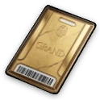
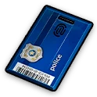
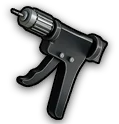

Llaves en ROB RUN: qué abre cada una
En Looty Bay hay 14 llaves de cajas fuertes, 13 llaves de habitaciones y 6 llaves y tarjetas especiales para las salas más valiosas. Las llaves se encuentran por la ciudad o se consiguen en el trueque con Lenny. Al recoger una llave, su cerradura se marca en el mapa. Solo los criminales pueden usar llaves, así que ponte la máscara primero.
Actualizado el . El juego está en acceso anticipado y cambia cada semana.
Cómo funcionan las llaves
- Por toda la ciudad hay llaves que abren pequeñas cajas fuertes y puertas cerradas. Tras las cerraduras suele haber botín valioso.
- Al recoger una llave, su cerradura se marca en el mapa. La descripción de la llave también dice qué abre.
- Solo los criminales pueden usar llaves.
- Tras la puerta sospechosa del Motel de Lenny hay trueque: allí cambias tus hallazgos por taladros, llaves y otras herramientas para atracos.
Llaves de cajas fuertes
 Las 14 se llaman «Llave de la caja fuerte». La descripción de cada llave dice qué caja abre:
Las 14 se llaman «Llave de la caja fuerte». La descripción de cada llave dice qué caja abre:
| Distrito | Qué abre |
|---|---|
| Playa Soleada | Abre la caja fuerte en el hotel Seasons de Playa Soleada. |
| Playa Soleada | Abre la caja fuerte en el hotel Reef de Playa Soleada. |
| Playa Soleada | Abre la caja fuerte en la farmacia de Playa Soleada. |
| Playa Soleada | Abre la caja fuerte en el café del muelle de Playa Soleada. |
| Playa Soleada | Abre la caja fuerte en el tienda de conveniencia de Playa Soleada. |
| Playa Soleada | Abre la caja fuerte en la tienda de electrónica de Playa Soleada. |
| Centro | Abre la caja fuerte en el tienda de conveniencia de la zona norte del Centro. |
| Centro | Abre la caja fuerte en el tienda de conveniencia de la zona central del Centro. |
| Centro | Abre la caja fuerte en la farmacia del Centro. |
| Centro | Abre la caja fuerte en el café del Centro. |
| Centro | Abre la caja fuerte en la gasolinera del Centro. |
| Loraine Hills | Abre la caja fuerte en la mansión de Loraine Hills. |
| Loraine Hills | Abre la caja fuerte en una de las casas de campo de Loraine Hills. |
| — | Abre la caja fuerte en el club de striptease. |
Llaves de habitaciones
 Las 13 se llaman «Llave de la habitación». La descripción dice qué habitación abre:
Las 13 se llaman «Llave de la habitación». La descripción dice qué habitación abre:
| Distrito | Qué abre |
|---|---|
| Playa Soleada | Abre la habitación cerrada de la tienda de armas de Playa Soleada. |
| Playa Soleada | Abre la habitación cerrada en la tienda de equipamiento de Playa Soleada. |
| Playa Soleada | Abre la habitación cerrada en la farmacia de Playa Soleada. |
| Playa Soleada | Abre la habitación cerrada en el tienda de conveniencia de Playa Soleada. |
| Playa Soleada | Abre la habitación cerrada en uno de los hoteles de Playa Soleada. |
| Centro | Abre la habitación cerrada en la tienda de armas del Centro. |
| Centro | Abre la habitación cerrada en la tienda de equipamiento del Centro. |
| Centro | Abre la habitación oculta de la izquierda en la gasolinera del Centro. |
| Centro | Abre la habitación oculta de la derecha en la gasolinera del Centro. |
| Centro | Abre la habitación cerrada en la farmacia del Centro. |
| Centro | Abre la habitación cerrada en el tienda de conveniencia del Centro. |
| Loraine Hills | Abre la habitación cerrada en una de las casas de campo de Loraine Hills. |
| — | Abre la sala VIP en el club de striptease. |
Tarjetas de acceso y llaves especiales

Grand Hotel: almacén secreto
Comisaría: sala cerrada Banco: tarjeta de la cámara acorazada de oro
Banco: tarjeta de la cámara acorazada de oroSeis llaves y tarjetas especiales abren las salas más valiosas de la ciudad:
| Distrito | Qué abre |
|---|---|
| Playa Soleada | Abre el almacén secreto del Grand Hotel de Playa Soleada. |
| Centro | Abre la cámara acorazada de oro en el banco. |
| Loraine Hills | Abre la habitación cerrada en una de las casas de campo de Loraine Hills. |
| Palmside | Abre la habitación cerrada en la comisaría de policía. |
| Palmside | Abre la armería en la comisaría de policía. |
| Palmside | Abre la cámara acorazada en la galería. |
Cómo conseguir el taladro y la tarjeta de la cámara acorazada de oro
- Abre habitaciones cerradas y hackea los ordenadores que hay dentro: así se llena la herramienta de hackeo USB.
- Cambia la herramienta llena por un taladro en el trueque, o véndela.
- La cámara acorazada del banco solo se abre con taladro. Trabaja despacio y hace ruido, y en cuanto se coloca, todo Looty Bay se entera.
- Cada caja de seguridad que abres llena las llaves de cajas de seguridad. Llenas, se cambian en el trueque por la tarjeta de identificación de la cámara acorazada de oro o se venden.
Ganzúas, llave maestra y otras herramientas
 GanzúaTe permite abrir puertas y contenedores sin activar la alarma, así como forzar el maletero de un vehículo ajeno.
GanzúaTe permite abrir puertas y contenedores sin activar la alarma, así como forzar el maletero de un vehículo ajeno. Llave maestraUna llave para acceder a los almacenes protegidos de otros jugadores.
Llave maestraUna llave para acceder a los almacenes protegidos de otros jugadores.
Ganzúa de maleteroUna herramienta para forzar el maletero del vehículo de otra persona. TaladroUna herramienta para forzar cámaras acorazadas de los bancos. Tarda mucho en hacer su trabajo y es muy ruidosa.
TaladroUna herramienta para forzar cámaras acorazadas de los bancos. Tarda mucho en hacer su trabajo y es muy ruidosa. MinitaladroCompacto y preciso. Abre rápidamente las cerraduras de cajas fuertes.
MinitaladroCompacto y preciso. Abre rápidamente las cerraduras de cajas fuertes. CortapernosSe puede usar para cortar la línea eléctrica de un asentamiento.
CortapernosSe puede usar para cortar la línea eléctrica de un asentamiento. Herramienta de hackeo USBSe llena al hackear ordenadores en habitaciones cerradas. Cuando está lleno, se puede canjear o vender por un buen precio.
Herramienta de hackeo USBSe llena al hackear ordenadores en habitaciones cerradas. Cuando está lleno, se puede canjear o vender por un buen precio. Llaves de cajas de seguridadSe llena al forzar cajas de seguridad. Cuando está lleno, se puede canjear por la tarjeta de identificación de la cámara acorazada de oro del banco o vender por un buen precio.
Llaves de cajas de seguridadSe llena al forzar cajas de seguridad. Cuando está lleno, se puede canjear por la tarjeta de identificación de la cámara acorazada de oro del banco o vender por un buen precio. Llave del yateAcceso a un palacio flotante. No puedo robar un yate, pero quienes puedan hacerlo pagarán una fortuna por esta llave.
Llave del yateAcceso a un palacio flotante. No puedo robar un yate, pero quienes puedan hacerlo pagarán una fortuna por esta llave.
Preguntas frecuentes
¿Cómo se usa una llave en ROB RUN?
Ponte la máscara: solo los criminales pueden usar llaves. Al recoger una llave, su cerradura se marca en el mapa, y su descripción dice qué abre.
¿Dónde consigo llaves?
Las llaves aparecen por la ciudad junto con el resto del botín. También salen llaves y herramientas en el trueque tras la puerta sospechosa del Motel de Lenny.
¿Qué abre la tarjeta de acceso?
La tarjeta de acceso abre el almacén secreto del Grand Hotel de Playa Soleada. Las demás llaves especiales abren la sala cerrada y la armería de la comisaría, la cámara de la galería, la cámara acorazada de oro del banco y una sala de una cabaña de Loraine Hills.
¿Cómo se abre la cámara acorazada del banco?
Solo con un taladro, que se consigue en el trueque a cambio de una herramienta de hackeo USB llena. Trabaja despacio y con ruido, y todo Looty Bay se entera cuando se coloca.
¿Qué diferencia hay entre la ganzúa y la llave maestra?
La ganzúa abre puertas y contenedores sin activar la alarma, y maleteros ajenos. La llave maestra abre los almacenes protegidos de otros jugadores: las cajas fuertes y estanterías de sus bases.
Más sobre ROB RUN
- Mapa de Looty Bay
- Guía para principiantes
- Cuenta bancaria y blanqueo
- Qué hacer con la carga
- Cómo ser policía
- Calculadora de decodificadores
- Guías
Listas, nombres, descripciones e imágenes de las llaves y herramientas: archivos del juego (24 nov 2026).